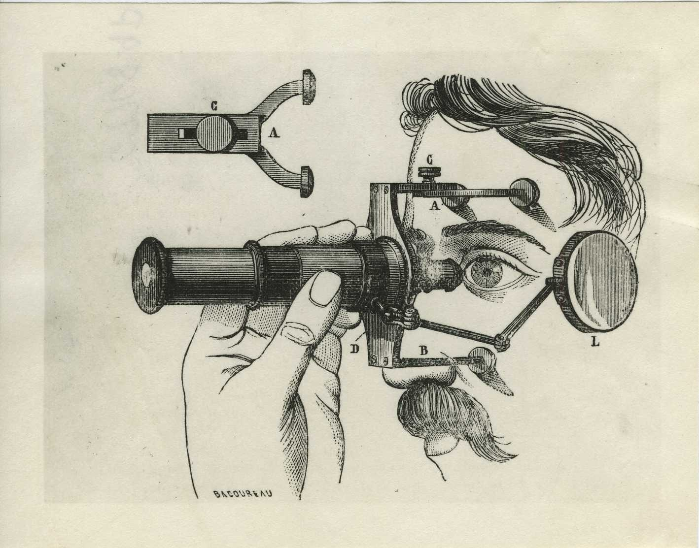

Give your agent its sight back.
LASIK strips BLA's decoys, tarpits and prompt traps out of hardened JavaScript, Electron apps, WebAssembly and Python, so REA and any AI reverse-engineering agent can read the real program again.
 Which is clearer, 1 or 2?
Which is clearer, 1 or 2?
function decodeRemoteBundle_e2a(mirrorDurableSensor_d6c) {
stepShadowHeapActiveGraph_a301(3056);
if ((Math.imul(runtimeSeedPrimaryHandle_be53 ^ 100, runtimeSeedPrimaryHandle_be53 ^ 100) & 7) === 0) {
_verifyEnclaveAttestationService_8589(175, 2) ^ _auditMonotonicCounterStaHandle_3273(35, 2);
}
return traceLazyEdge_261.createHash(((Math.imul(runtimeSeedPrimaryHandle_be53 | 15, (runtimeSeedPrimaryHandle_be53 | 15) + 1) & 1) === 0 ? "s" : "b") + ((Math.imul(runtimeSeedPrimaryHandle_be53 ^ 124, runtimeSeedPrimaryHandle_be53 ^ 124) & 7) === 0 ? "1" : "h") + ((Math.imul(runtimeSeedPrimaryHandle_be53 | 123, (runtimeSeedPrimaryHandle_be53 | 123) + 1) & 1) === 0 ? "a" : "8") + ((Math.imul(runtimeSeedPrimaryHandle_be53 | 67, (runtimeSeedPrimaryHandle_be53 | 67) + 1) & 1) === 1 ? "4" : "2") + ((Math.imul(runtimeSeedPrimaryHandle_be53 ^ 12, runtimeSeedPrimaryHandle_be53 ^ 12) & 7) === 1 ? "5" : "b") + ((Math.imul(runtimeSeedPrimaryHandle_be53 | 21, (runtimeSeedPrimaryHandle_be53 | 21) + 1) & 1) === 1 ? "5" : "6") + ((Math.imul(runtimeSeedPrimaryHandle_be53 | 15, (runtimeSeedPrimaryHandle_be53 | 15) + 1) & 1) === 0 ? "" : "45") + ((Math.imul(runtimeSeedPrimaryHandle_be53 ^ 124, runtimeSeedPrimaryHandle_be53 ^ 124) & 7) === 0 ? "eb" : "") + ((Math.imul(runtimeSeedPrimaryHandle_be53 | 83, (runtimeSeedPrimaryHandle_be53 | 83) + 1) & 1) === 0 ? "" : "e7")).update(mirrorDurableSensor_d6c).digest(((Math.imul(runtimeSeedPrimaryHandle_be53 | 89, (runtimeSeedPrimaryHandle_be53 | 89) + 1) & 1) === 0 ? "h" : "8") + ((Math.imul(runtimeSeedPrimaryHandle_be53 ^ 44, runtimeSeedPrimaryHandle_be53 ^ 44) & 7) === 0 ? "f" : "e") + ((Math.imul(runtimeSeedPrimaryHandle_be53 | 63, (runtimeSeedPrimaryHandle_be53 | 63) + 1) & 1) === 0 ? "x" : "b") + ((Math.imul(runtimeSeedPrimaryHandle_be53 | 5, (runtimeSeedPrimaryHandle_be53 | 5) + 1) & 1) === 1 ? "37" : "") + ((Math.imul(runtimeSeedPrimaryHandle_be53 ^ 68, runtimeSeedPrimaryHandle_be53 ^ 68) & 7) === 1 ? "" : "0d") + ((Math.imul(runtimeSeedPrimaryHandle_be53 | 91, (runtimeSeedPrimaryHandle_be53 | 91) + 1) & 1) === 1 ? "b9" : "") + ((Math.imul(runtimeSeedPrimaryHandle_be53 | 33, (runtimeSeedPrimaryHandle_be53 | 33) + 1) & 1) === 0 ? "" : "ae") + ((Math.imul(runtimeSeedPrimaryHandle_be53 ^ 36, runtimeSeedPrimaryHandle_be53 ^ 36) & 7) === 0 ? "2b" : "") + ((Math.imul(runtimeSeedPrimaryHandle_be53 | 105, (runtimeSeedPrimaryHandle_be53 | 105) + 1) & 1) === 0 ? "" : "9d"));function decodeRemoteBundle_e2a(mirrorDurableSensor_d6c) {
return crypto.createHash("sha256").update(mirrorDurableSensor_d6c).digest("hex");
}BLA's own source for this function is a one-line sha256(s). Names stay scrambled; the logic comes back.
BLA's own CrackMes, read again.
Across all 15 hardened files in BLA's CrackMe set: 1,837,515 bytes become 59,621, and an estimated 21.1 million tokens become 22 thousand.
Version 6: vault.cjs and panel.html, 5,234 lines as shipped, 140 after LASIK. Token counts are LASIK's estimates, not measured REA runs.
How a hardened file clears
The protected program still has to run, so everything BLA adds is dead code, a value the file can compute, or padding.
The bundle lands
164,580 bytes: XOR strings, opaque predicates, tarpits, decoys and a hash interlock.
Constants resolve
Strings decode with the key that ships beside them; predicates fold to true or false.
Decoys lose their anchor
The interlock digest is computed, so unreachable decoy code can be removed safely.
Your agent reads it
5,640 bytes and 99 lines, in a copy beside the original, with every AI-evasion technique counted. Nothing is executed.
What BLA adds, LASIK removes
- Opaque predicatesfour fixed identities, folded
- XOR stringskey ships beside them
- Tarpitsstep counters, dropped
- Decoysfake enclave and TPM code
- Interlocksdigest checks, computed
- Prompt trapsplanted chat turns, redacted

Blind scanners help malware.
Why LASIK exists
BLA sells blinding AI analysts as protecting your IP. The same tricks hide a malicious package from the AI reviewers that supply chains now depend on. Legitimate code rarely needs to fool a scanner; malware always does.
What it will not do
LASIK reads files and never runs them. It does not touch licence checks or DRM. It is for your own builds, malware analysis, CTFs and authorised audits.
Questions
Is it legal to use?
On your own builds, for malware analysis, in CTFs and in audits you are authorised to run, yes. Removing protection from someone else's software can breach its licence or anti-circumvention law such as the US DMCA §1201. This is not legal advice.
Does the cleaned file still work?
Every pass only deletes code it can prove never runs, or replaces an expression with a value it can compute from the file itself. The output is meant for reading: your agent works on it, your users never run it.
Which files can it clean?
JavaScript bundles (CommonJS and ES modules), inline scripts in HTML, Electron archives and fuses, source maps, WebAssembly and Python. Every report also says how many AI-evasion techniques it found.
Are the original names restored?
No. BLA renames everything to plausible words such as decodeRemoteBundle_e2a, and the originals are gone from the file. LASIK brings back the structure; your agent renames from what the code does.
What happens when BLA changes?
It is an arms race, and LASIK tracks BLA releases rather than claiming to beat everything. Each new CrackMe BLA publishes becomes a test case.
Why is it called LASIK?
LASIK is the laser eye surgery that fixes blurred vision. BLA blinds agents; this gives them their sight back. It also stands for LLM Agent Sight In Kode.
Try it on a folder.
Writes a cleaned copy beside the folder and never runs the code. Needs Node 20.19 or newer.